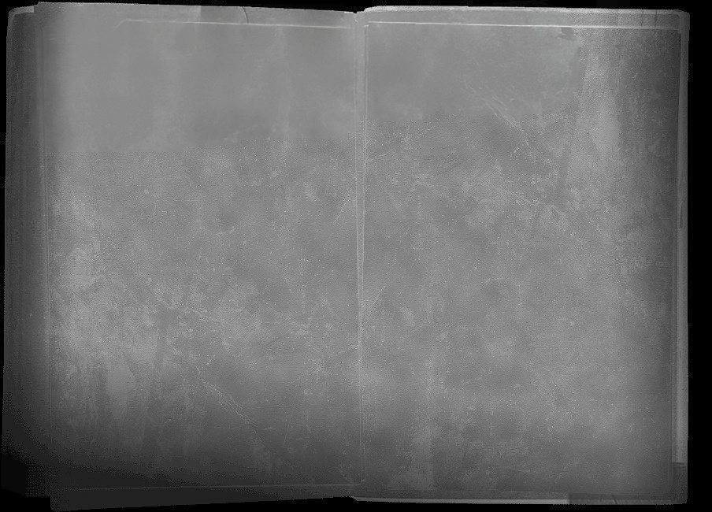

"O segundo projeto de Charlie | Club Benarés.
Esta curta-metragem apresenta uma crítica ao mundo artístico contemporâneo, onde o esforço, a técnica, o valor económico e emocional de uma obra parecem já não ser critérios relevantes para que algo seja considerado "arte".
Hoje em dia, quase tudo é rotulado como arte, talvez porque, socialmente, deixámos de questionar o que realmente merece esse nome. Inspirado pelo conceito de "Hamparte", criado por Antonio García Villarán - "a arte de não ter talento".
Este filme lança um olhar provocador sobre obras que, por carecerem de substância, tornam-se quase um insulto à nossa inteligência. Mas mais grave ainda é o papel dos artistas e críticos que, com discursos vazios e pretensiosos, tentam convencer-nos do valor dessas obras e inventam qualquer barbaridade haha."
CC.
Runtime: 3m42s
Câmera: Sony FX30 + Sony A7III
Áudio: Premix3 + Rode NTG2
Software: Kdenlive
Local: Areeiro, Lisboa
REALIZAÇÃO + PRODUÇÃO + EDIÇÃO
Charlie Chaves
Assistência Produção
Nityam + Patricia Pontes
IMAGEM
Gonçalo Pereira + Nityam
SOM
Valdir Neves
Um jovem artista finaliza a sua obra-prima, mas a cada dia que passa, fica mais insatisfeito com o resultado final, por isso decide descartar o seu trabalho. Posteriormente, um crítico de arte encontra a sua obra...
Janeiro 2024 | Rodagem
71 Imagens
Fotografias: Valdir Neves
VisualizarMarço 2024 | Frames
4 Frames
Direccíon: Charlie Chaves
Visualizar